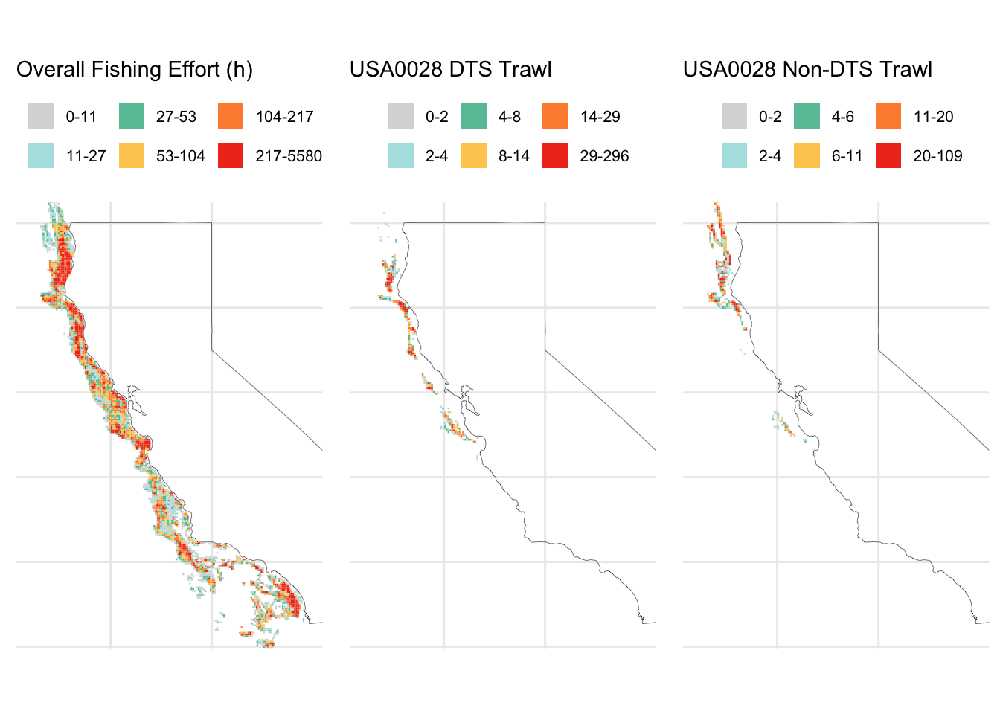
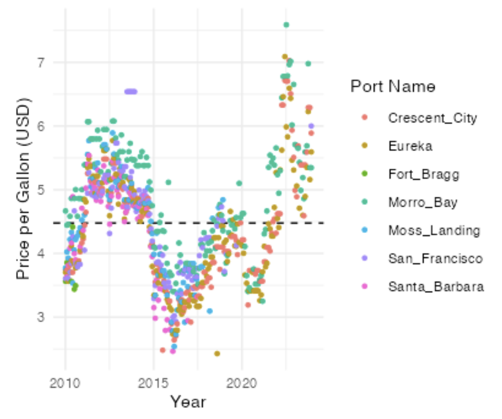
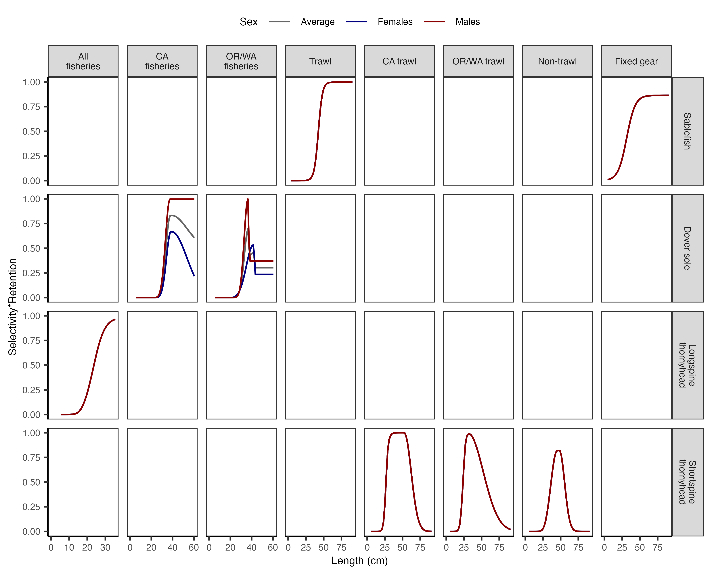

3 Fleet data
This section describes the raw input datasets and parameters used to run the R routines related to fleet characteristics. These include information on individual fishing vessels, gears, métiers, vessel economics, and related aspects. The files should be stored and loaded from raw_inputs/FISHERIES. Most of the information can be derived from available VMS, landing receipts, vessel registry data, and stock assessments.
Note: The data included in this repository and presented here is example data only. It is derived from the actual case study but does not represent real data.
3.1 Fishing effort distribution
DISPLACE requires spatial object inputs defining fishing effort distributions. These can be provided at different levels of aggregation, ranging from overall fleet-wide fishing effort to distributions by port of operation, by métier, or even by individual vessels. The more disaggregated the inputs, the more accurately DISPLACE can emulate the fleet and vessel behaviour.
These files must be available in .shp format within FISHERIES/SpatialLayers, and their names must match those specified in the name_gis_file_for_fishing_effort_per_polygon variable from vessels_specifications_per_harbour_metiers.csv, as detailed in the following section. Fishing effort values can be defined either in absolute terms (using any unit) or as relative values. However, since DISPLACE outputs express effort as cumulative fishing time, we recommend transforming input effort values to that unit to enable direct comparison.
For our case study, we used vessel-specific fishing effort distributions by métier. Thus, if a vessel operated with more than one gear, we provided a separate spatial file of associated fishing effort for each métier for that vessel.
The figure below shows the overall input fishing distribution for our fleet, along with examples of individual inputs used in this analysis.
3.2 Vessels specifications
In this study, we focused on vessels participating in the DTS fishery off the coast of California (hereafter DTS vessels).
The DISPLACE input file containing information for each of the vessels included is in vessels_specifications_per_harbour_metiers.csv. Information can also be inputed by group of vessels. Each individual or grouped vessel characteristics are disagregated by harbor and metier (i.e., each vessel could be repeated in more than observation in this table if it belongs to more than one metier or lands in different ports). Métier is defined as a combination of gear and target species or fisheries that are distinctly defined. For our case study we included 12 ports and five metiers.
The variables included in this dataset are detailed below:
VesselId: This variable corresponds to the vessel ID. It may be represented with a VMS ID, IMO number, or any other identifier used to distinguish individual vessels or groups of vessels. In DISPLACE, vessel IDs follow a specific nomenclature consisting of the country code followed by a numeric code (e.g.,USA0001,USA0002, etc.), which allows disaggregating DISPLACE outputs from the GUI by country fleet.nb_vessels: This is the number of vessels represented by a unique ID. If we have information on all vessels available, this will have a value of 1. If we have limited information at an individual vessel level or want to simplify the analysis, we can group several vessels under the same ID and characteristics and specify here the number of vessels in each group.Port: This is the port from where the vessels operate. If a vessel operates in more than one port, we should create two distinct observations for that vessel, distinguishing between one harbor and another.dcf_gearandGear: Both variables contain the same métier names. This redundancy comes from legacy versions of the R routines. The métier names included here will be consistent across all analyses and inputs, and they condition other inputs such as decision trees or the disaggregation of outputs. As withharbour, the dataset should contain different rows for the same vessel when it operates under different métiers.RelativeEffort: Defines the share of fishing effort exerted by a vessel or group of vessels for a given métier and/or port grouping. When a vessel appears in multiple rows of the dataset (e.g., across different métiers or ports), its effort is distributed across those rows, and the values must sum to1. The proportional contribution for each row is calculated as the ratio of time at sea for that métier and/or port to the vessel’s total time at sea.name_gis_file_for_fishing_effort_per_polygon: This variable specifies the name of the.shpfile from which the fishing effort distribution information is read.name_gis_layer_field: parameter defining the variable in.shpexpressing fishing effort, in our casefe. The units are not important since it can be interpreted in relative terms depending on what we specify in variableis_gis_layer_field_relative_numbers.is_gis_layer_field_relative_numbers: Indicates whether the effort variable represents relative values. The default isFALSE. If relative values are available, you can still use the R routines designed for absolute values by adjusting the GIS layer to reflect relative importance on a linear scale. For example, if some areas are 100 times more likely to be visited than others, assign a value of1to the less frequented polygon and100to the more frequented one.xfold_gis_layer_field: Default value1.{population code}_kg_h: Defines the catching capacity per fishing hour of a vessel or group of vessels for each population included in the analysis. Each population has its own variable. For example, our analysis includesSAB_kg_h,SJU_kg_h,SJZ_kg_h,MIP_kg_h,EOJ_kg_h,SGO_kg_h, andOTH_kg_h.This variable is used in the simulation to define the fishing rate and to determine how much time is required to fill each vessel’s storage capacity. For explicitly defined species, these rates adapt to the simulated abundances provided by the population model. Since implicit stocks are not dynamically modeled, their catch is only represented using fixed catch rates derived from historical data.
VE_LENandTonnage: These parameters correspond to vessel length (m) and vessel tonnage (any unit).Tonnage values are not used as DISPLACE inputs, but included as a references. However, as for our case study we use tonnage values to extrapolate other parameters such as engine power or fuel tank capacity. Neither the VMS nor fish ticket data contain much information on vessel characteristics. To obtain such information, in our study we have web scraped information from the USCG Port State Information Exchange website and the NOAA limited entry dataset.mean_kW: Mean engine power of the vessel. This variable influences the fuel consumption of simulated trips. In our case study, engine power values were only available for a few vessels. To estimate engine power for the rest, we used registry data from 2,043 vessels and predicted engine power from tonnage and length using a model we developed.kW: Represents the same information asmean_kW. If we lack engine power data and we recorded as0orNA, the script06_GenerateVesselsConfigFiles.rwill assign a value based on the modelDanishkWvsLOAModel.Rdatainstead, used in other DISPLACE applications by Bastardie et al.fishing.speed.knotsandcruise.speed.knots: Average speed when the vessel is fishing and average speed when the vessel is steaming. We got these values from the VMS data by discriminating fishing pings from the rest. This values were adjusted for calibrating the model as discussed in the calibration section.fuel.tank.liter: Fuel tank capacity of the vessel. This parameter is important because it influences trip duration. A half-empty fuel tank will trigger the vessel to return to port. Other reasons for returning to port include a full fish hold or reaching the end of the day if the vessel is set to perform daily trips (i.e., when trip duration is set to <30h).In our case study, vessel-specific fuel tank capacities were not available for our vessels of interest. Instead, we built a model from a limited dataset to infer tank capacity based on vessel length. Alternatively, the case example in this repository provides a model to calculate tank capacity as a function of length using the nonlinear regression model
DanishFuelTankCapModel.Rdata, which has been applied in other DISPLACE applications by Bastardie et al, and it is already integrated within06_GenerateVesselsConfigFiles.r.fuel.cons.h: Fuel consumption per hour. Likefuel.tank.liter, this parameter is critical because it determines trip duration, fuel availability, and the variable costs of a trip.For this parameter, we use the consumption expression from @bastardie2013integrating. It is already implemented within
06_GenerateVesselsConfigFiles.r, where a linear model is built using data fromIBM_datainput_engine_consumption.txt. This expression defines fuel consumption per hour based on engine power (kW). Consumption is adjusted within the simulation using multipliers for different operational phases.Operational phase multipliers: Multipliers applied to fuel consumption per hour depending on the phase of a trip, since fuel use varies across different activities.multip.fuel.steaming: Adjusts fuel consumption when the vessel is steaming, i.e., traveling to or from fishing grounds.
multip.fuel.fishing: Adjusts fuel consumption when the vessel is actively fishing. Consumption can vary depending on gear type and fishing method.
multip.fuel.ret.port.fish: Adjusts fuel consumption when the vessel is returning to port with its catch. Extra weight from the catch can slightly increase fuel use.
multip.fuel.inactive: Adjusts fuel consumption when the vessel is inactive (e.g., docked at port, anchored, or for gillnetters setting nets at very low speeds).
In the absence of specific information, all multipliers can be set to
1. For our case study, we use the values from @bastardie2013integrating: Fishing:1; Steaming:0.8; Inactive:0.1. For returning to port with catch, we use1.1, as applied in other DISPLACE analyses from the Bastardie repository, to reflect slightly higher consumption when carrying landed fish.ave.storage.fish.kg: Fish storage capacity of the vessel. This defines another trigger for when a vessel must return to port, once no more fish can be stored the trip ends.Storage capacity can be defined as the highest observed historical catch for a given vessel, creating an artificial ceiling for total potential catches. However, actual storage capacity in weight may vary across trips depending on catch volume and other conditions. For this reason, using the maximum observed value across all trips in the time series may not always be ideal. Due this, the storage capacity variable was also adjusted during the calibration process, as described later.
nb_pings_per_trip: Defines the frequency of changing fishing grounds within a trip. This value can be1or higher. If greater than1, the vessel may shift between several fishing grounds instead of remaining in a single node. This behavior also depends on the use of a Change Fishing Ground Decision Tree, which sets the probabilities for moving to other grounds. If the value is1, the vessel will fish only in a single node and will not switch grounds, reducing navigation time and concentrating all fishing pressure for that particular simulated trip within that node. In our case study, we use a value of1. However, an example decision tree file is provided in the repository:dtrees/ChangeGround_VME.dt.csv.trip.duration.h: Average trip duration per métier. This parameter affects the time at sea in the simulation. While maximum trip duration could be used instead to test effects or for calibration purposes, this was not applied in our study. When calculating, we group only byvesselid(not byportorgear), assuming that trip duration reflects the vessel’s overall capacity regardless of the type of fishing activity.Gamma_shapeandGamma_scale: Parameters used to draw the resting time in port between consecutive trips. In our DISPLACE application, these parameters are not used directly because a GoFishing decision tree defines this behavior. Nevertheless, we must still populate them, so we include the default values from other DISPLACE applications (Bastardie et al.):0.4485and336.7618, respectively. These values are ignored if the GoFishing decision tree is active.weekEndStartDay,weekEndEndDay,WorkHoursStart,WorkHoursEnd: Variables that can be used along thestopFishingdecision tree if such a tree is provided in thedtreefolder and activated in theprocessed_inputs/simusspescenario.datfile.If no decision tree is used, return-to-port events are instead triggered by conditions such as a half-empty fuel tank, full fish storage, or the end of a daily trip. In this case, trip duration can be flexible, potentially lasting more than a week and not following a regular weekly pattern. If applied, weekdays are represented by numbers
1to7, and hours by numbers1to24.vessel_range_km: Vessel range in kilometers, defining how far a vessel can travel. In the R routines, this parameter determines which nodes are accessible to a vessel from a given port; nodes outside that range cannot be visited.We calculate this by taking the maximum distance traveled across all trips and dividing it by 2 to account for the round-trip distance. Alternatively, it could be estimated as the straight-line distance from the farthest point on a trip to the port, or as the mean distance traveled per trip. Due to dependencies in the R routines, any value above 4,500 km will yield an error.
3.3 Economic data
DISPLACE includes a wide range of economic parameters that can be used to more accurately estimate the profitability, and cost efficiency of each vessel. Besides stock prices already described in the population section, DISPLACE requires to inform vessel-specific economic parameters and fuel prices.
3.3.1 Fuel prices
Fuel price values in currency unit per liter, need to be hardcoded in the 06_GenerateVesselsConfigFiles.r and 12_GenerateHarboursFiles.r routines and must be updated for each analysis if different estimates are used. These values remain fixed across the simulated time series. They can be defined by vessel size (if different fuel types apply to different vessel classes) or assigned differently by port, in which case the R routines would need to be modified accordingly.
For our case study, fuel prices were obtained from the Fisheries Economics Data Program (PSMFC 2025). Since fuel price values and trends are consistent across ports, we applied a uniform price across all primary ports included in our study based on the data for the primary ports available in the fuel dataset. For our analysis, we assigned the same average fuel price across all ports and vessels from 2010 to 2023, converted from dollars per gallon to dollars per liter. These prices reflect the values at the time they were collected, so we adjusted them for inflation to 2023 using the priceR package. The inflation-adjusted average price was $4.47 per gallon, or $1.18 per liter. These prices are reported before tax. The same dataset references a 8.5% fuel tax applied in Eureka in 2011. We use this value as our reference, since other tax information refers to periods prior to 2010. Applying this tax results in a final fuel cost of $1.28 per liter, which we use to represent the fuel-related cost in the model.

3.3.2 Vessel-specific economic variables
DISPLACE requires specific vessel-level economic variables to individually characterize the economic features that define each vessel’s fishing operations. This information must be provided in two files: fisheries_economics_variables.csv and STECF/Economics_fs.csv. The contents of both files are identical. This redundancy exists due to legacy versions of the routines. Both files must be present for the routines to generate the proper DISPLACE inputs.
For our case study, most economic values are derived from Steiner et al. (2021) and accessed through the Fisheries Economics Explorer (FISHEyE), part of NOAA’s Economic Data Collection (EDC). Revenue and cost data are inflation-adjusted to 2023 (Steiner et al., 2021). The EDC dataset is aggregated at a relatively coarse level, limiting the ability to get individual vessel characteristics or detailed group-level information. Nonetheless, it provides average estimates by broader categories. For our study, we use the following available aggregation categories: economic metrics by available ports of interest (i.e., Crescent City, Eureka, Fort Bragg, San Francisco, and Morro Bay/Monterey), vessel size categories (i.e., less than 60 ft, between 60 and 80 ft, and greater than 80 ft), and fishery type (i.e., groundfish using trawl gear, and groundfish fixed gear vessels with a trawl endorsement). We then match these economic metrics to individual vessels in our dataset according to their operating ports, metier, and vessel size categories. When vessel specifications can’t be matched to any category, we use average values.
The variables required in fisheries_economics_variables.csv and STECF/Economics_fs.csv are:
Nb_crew: This variable correspoind to the number of crew working in the vessel, it has implications for the selection of other variables, such as labor or crew payments (e.g., variable crewshare_and_unpaid_labour_costs_percent).Annual_other_income: This represents any income not related to fishing, in cases where fishing is a part-time activity, or when selling fishing rights (e.g., Individual Transferable Quotas). In our case, we will set this value to 0, assuming that all vessels generate revenue solely from fishing. This value must be indicated on any give currency for the entire vessel not by crew member.Landing_costs_percent: Percentage of landing costs associated with taxes, if any, on income from landings, which may be collected by the port or the state. In California, landing fees are paid by buyers or intermediaries rather than by fishers (CDFW 2025). Therefore, for this analysis the value is set to0.Crewshare_and_unpaid_labour_costs_percent: This represents the percentage share of landing income that goes to the crew. In Vastenhoud et al. (2023), this corresponds to the sum of personnel costs and the value of unpaid labor.This variable represents labor costs as a share of GVA, and it is used to define there economic parameters in DISPLACE within
Vessel.cpp:
For gross profit we’re subtracting all labor compensation, whether paid or unpaid, from GVA to get the owner’s profit. So we need to include both actual payments and the imputed labor value.
GrossProfit = (GVA*(100.0-crewshare_and_unpaid_labour_costs_percent)/100.0)For labour surplus we are trying to isolate the value assigned to labor, so again we need the total labor cost, not just what’s paid to the crew.
LabourSurplus = (GVA * crewshare_and_unpaid_labour_costs_percent/100.0) - ((annual_insurance_costs_per_crew * (double)tstep / 8761) * this_vessel_nb_crew) - LabourOpportunityCostsBreak-Even Revenue needs complete labor costs to properly assess what portion of revenue is needed to cover all expenses.
BER = ((other_annual_fixed_costs * (double)tstep / 8761) + CapitalOpportunityCosts + (vessel_value * ((100.0 - annual_depreciation_rate) / 100.0) * (double)tstep / 8761)) / (1 - (((GVA * crewshare_and_unpaid_labour_costs_percent / 100.0) + TotFuelCosts + TotVarCosts) / TotLandingIncome));For our case study, we use the variable labor from FISHEyE which captures the total cost of labor. This includes both paid crew wages and the imputed value of labor provided by owner-operators, thus representing the full economic cost of labor, regardless of whether it is paid out or retained by the vessel owner acting as crew.
With this we define: \[ Crewshare\_and\_unpaid\_labour\_costs\_percent = \dfrac{labor}{GVA} \times 100 \]
Other_variable_costs_per_unit_effort: This variable represents other variable costs beyond fuel and labor. It should be expressed per unit of effort. In Vastenhoud et al. (2023), this is calculated as (Other variable costs + Repair & maintenance costs) / (Days at sea × 24 hours). InVessel.cpp, this definesTotVarCosts, which is used to calculate both BER (as detailed above) and GVA:
GVA = (TotLandingIncome+(annual_other_income* (double)tstep/8761)) - TotFuelCosts - TotVarCosts - (other_annual_fixed_costs* (double)tstep/8761)For our case study we use:
\[ Other\_variable\_costs\_per\_unit\_effort = (all\_variable\_costs - fuel - labor) / avg\_yearly\_hours\_at\_sea \]
Annual_insurance_costs_per_crew: Despite the name, which could be misleading refering exclusively to insurance cost per crew member (excluding vessel insurance), this variable also encompasses other mandatory labor-related expenses that employers must pay regardless of profitability. These may include employer-paid payroll taxes, unemployment insurance, and similar costs. It is used solely to compute labor surplus.For our case study, this value is set to
0, as these additional labor-related costs are incorporated into other fixed cost categories, based on the equivalent FISHEYE variable.Other_annual_fixed_costs: consistent with how it is used inVessel.cpp(i.e. to calculate GVA and BER) this variable corresponds to all fixed costs.Vessel_value: This variable represents the vessel’s initial value. In FISHEyE, we have both the vessel market value and the vessel replacement value. Since the DISPLACE variable is intended to capture the vessel’s starting asset value, we will use the replacement value, as it excludes depreciation and more accurately reflects the original investment cost.This is supported by its use in calculating the Capital Opportunity Costs, as implemented in
Vessel.cpp, where we want to reflect the full capital invested before depreciation.
CapitalOpportunityCosts = (vessel_value * opportunity_interest_rate/100.0) * (double)tstep/8761Standard_labour_hour_opportunity_costs: A labour hour’s opportunity cost is what a worker or an economy gives up to use that hour in a specific way. Vastenhoud et al. (2023) uses hourly labour costs for Denmark. For our case study, the hourly opportunity costs are based on estimates from the Employer Costs for Employee Compensation reported by the Bureau of Labor Statistics (BLS, 2024). According to the latest report, the average employer cost for private industry workers on the West Coast is $52.84 per hour. This value is entered per crew member, not aggregated or adjusted to the entire crew. This is used to define the labour oportunity costs inVessel.cpp:
LabourOpportunityCosts = standard_labour_hour_opportunity_costs * this_vessel_nb_crew * TotHoursAtSeastandard_annual_full_time_employement_hours: We define standard annual full-time employment as a maximum of 40 hours per week, totaling 2,080 hours per year (i.e., 52 weeks × 40 hours). This value is also entered per crew member, not aggregated or adjusted to the entire crew.Annual_depreciation_rate: This represents the annual depreciation rate of the vessel’s initial value, and does not apply to other equipment, as implemented inVessel.cpp:
NetProfit = GrossProfit - CapitalOpportunityCosts - (vessel_value * (1-((100.0-annual_depreciation_rate)/100.0)) * (double)tstep/8761)RoFTA = (NetProfit + CapitalOpportunityCosts) / (vessel_value* ((100.0-annual_depreciation_rate)/100.0)*((double)tstep/8761))For the vessel’s annual depreciation rate, we follow Kitts et al. (2022), which applies a depreciation rate of 4% for vessels less than 25 years old. This value is also adopted in the NOAA Fisheries Best Practices for Measuring the Economic Performance of Fishing Businesses report (Kitts et al., 2022), and also used in a different fishery context by Vastenhoud et al. (2023).
Opportunity_interest_rate: This variable is used to calculate the Capital Opportunity Costs. We define the opportunity interest rate using Moody’s BAA corporate bond rate as a reference (Lian, 2012; Kitts et al., 2022). BAA-rated corporate bond yields have fluctuated over the past decades and are currently above 6%. However, we adopt a 5% rate to maintain consistency with prior fisheries economic assessments.Annual_discount_rate: In 2023 the U.S. Office of Management and Budget (OMB) recommended a 3% rate for evaluating public investments or projects with intergenerational impacts. Horsch et al. (2023) discuss a broader range of discount rates and note that NOAA and other trustees have commonly used a 3% rate in similar contexts. Feist et al. (2025), however, applied a 5.2% discount rate when evaluating fisheries economic activity from 2011 to 2020. This same 5.2% rate is also used to discount future economic activity from fisheries when calculating the present value of total economic output. For consistency with Feist et al. (2025), we adopt a 5.2% discount rate in this analysis.
3.3.3 Selectivity
DISPLACE requires selectivity data, provided in the file fishing_gear_selectivity_ogives_per_stock.csv. This file contains the selectivity of each gear for each species by size bin, extracted from the respective stock assessments.
For our case study, we extracted fishing selectivity at length, defined as selectivity multiplied by retention, from the stock assessment model outputs (Table tbl-selectivity; Figure fig-selectivity). We used the selectivity estimated for the most recent time block and adjusted the corresponding lengths to match the DISPLACE size bins.
| Species | Trawl | Longline | Trap | Other |
|---|---|---|---|---|
| Dover sole | CA fisheries | CA fisheries | (no retention allowed) | CA fisheries |
| Longspine thornyhead | All fisheries | All fisheries | (no retention allowed) | All fisheries |
| Sablefish | Trawl | Fixed gear | Fixed gear | Fixed gear |
| Shortspine thornyhead | CA trawl | CA trawl | (no retention allowed) | CA trawl |
